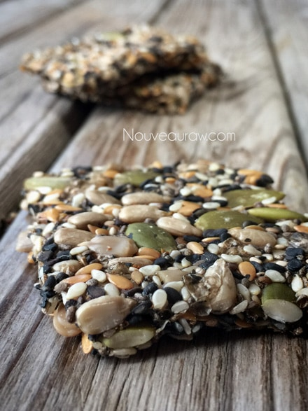
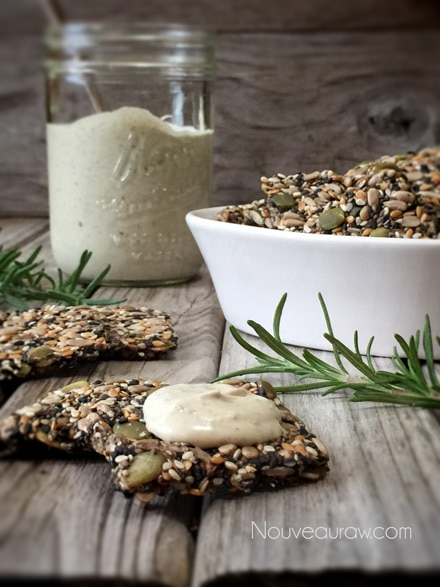

Creole Seeded Crackers

~ raw, vegan, gluten-free, nut-free ~
You must love seeds of all shapes, sizes, and colors if you plan on loving these crackers. There’s just no way of getting around it.
I wanted to make sure that with every bite of cracker, it would burst with texture and flavor (and nutrients). I liken it to an artisan bread that has been rolled thin and dehydrated into a crisp cracker.
Truly these crackers will help make your next snacking experience unforgettable, especially when you look in the mirror 5 hours after eating one and find that you have seeds tucked in all your teeth! So this is my subtle warning… check your teeth after eating them or use it as a test to really find out who your true friends are. :)
They are delicious, super healthy, nut-free, gluten-free crackers that are dehydrated at low temperatures to ensure that all the nutrients, including the omega-3’s and important enzymes, remain vitalized and stable.
They are super crunchy, very sturdy yet on the same hand, crispy and airy when you bite into them. They pair perfectly with raw cheeses, fruit plates, and creamy dips and spreads. Make these crackers and plant a “seed” of goodness in all who try them. :)
The last thing that I really wanted to say about these crackers is that ascetically, they are beautifully dramatic in color. It’s not too often that you see the color black in a cracker and if you do, it typically went bad. lol So the wonderful combination of black, brown cream, and the earthy green from the pumpkin seeds, make for a sticking cracker! Enjoy and many blessings, amie sue
Yields 36 crackers
- 1 cup sunflower seeds, soaked & dehydrated
- 1/2 cup pumpkin seeds, soaked & dehydrated
- 1/3 cup white sesame seeds
- 1/3 cup black sesame seeds
- 1/3 cup flax seeds
- 1/3 cup chia seeds
- 1 Tbsp Creole seasoning
- 1/4 tsp Himalayan pink salt
- 1 1/2 cups water
- 2 tsp coconut aminos
- 1 tsp maple syrup
Preparation:
Cracker dough:
- In a medium-sized mixing bowl, combine the sesame seeds, sunflower seeds, flax and chia seeds, creole seasoning, and salt. Stir together, making sure the seasoning is well incorporated.
- Add the water, coconut amigos, and maple syrup, mix well.
- Set aside for 30 minutes. This will give the flax and chia seeds time to work their thickening magic.
Dehydration:
- Spread the batter 1/4″ thick on the non-stick sheets that come with the dehydrator.
- You can use parchment paper but not wax… wax sticks.
- Score the crackers to the size and shape that you want. I like to use a long metal ruler for this.
- Dehydrate at 145 degrees (F) for 1 hour, then reduce to 115 degrees (F). After about 2 hours, flip the crackers over onto the mesh sheet and gently peel the non-stick sheet off. Continue to dehydrate for 8-10 hours or until dry.
- Tip to flip – Set the dehydrator tray in front of you. Place a mesh sheet on top of the crackers, followed by another dehydrator frame. The crackers are now sandwiched between two trays. Pinch the edges together and flip over. Remove the tray and non-stick sheet. Easy peasy.
- Store in an airtight container for 1-2 weeks. Freeze for up to 3 months.
To make the Creole seasoning:
Ingredients:
Combine the following spices in a jar and shake.
- 1 1/4 Tbsp paprika
- 1 Tbsp Himalayan pink salt
- 1 Tbsp garlic powder
- 1/2 Tbsp black pepper
- 1/2 Tbsp onion powder
- 1/2 Tbsp cayenne pepper
- 1/2 Tbsp dried oregano
- 1/2 Tbsp dried thyme
Culinary Explanations:
- Why do I start the dehydrator at 145 degrees (F)? Click (here) to learn the reason behind this.
- When working with fresh ingredients it is important to taste test as you build a recipe. Learn why (here).
- Don’t own a dehydrator? Learn how to use your oven (here). I do however truly believe that it is a worthwhile investment. Click (here) to learn what I use.


© AmieSue.com